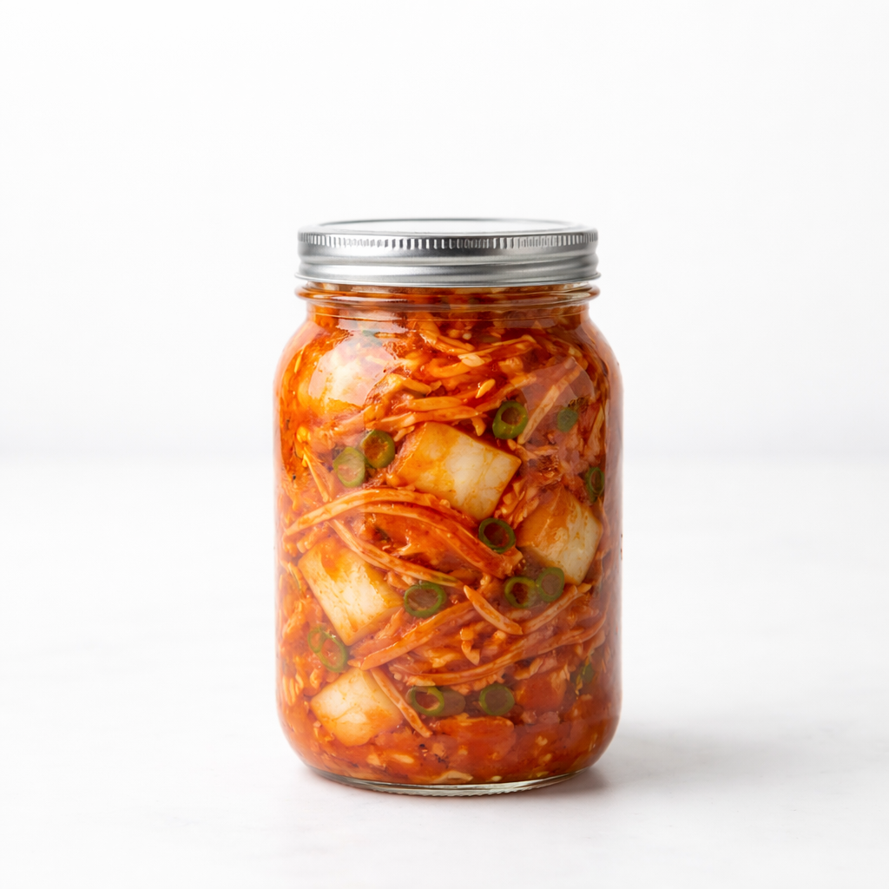

Kimchi adalah makanan fermentasi yang berasal dari Korea Selatan dengan rasa yang asam, pedas, dan menyegarkan. Kimchi digunakan sebagai side dish terutama untuk mengurangi rasa yang sangat kuat. Salah satu bahan yang membuat kimchi pedas adalah gochugaru: Bubuk cabai kasar yang berasal dari Korea Selatan juga. Tetapi apakah menggantikan gochugaru dengan cabai rawit menghasilkan rasa yang sama?